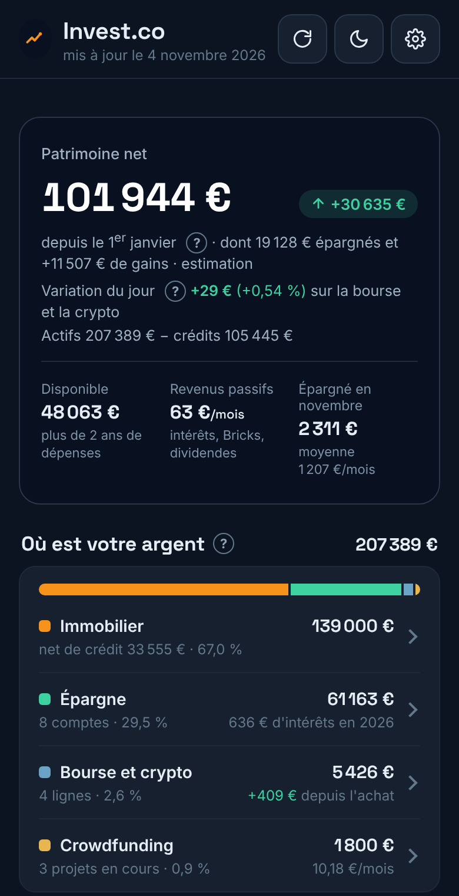
Onze chapitres courts. Commencez par les deux premiers, puis lisez ceux de vos modules.
Une application web qui s'installe sur votre écran d'accueil, sans passer par un store.
Chrome
Safari
Chrome, Edge, Safari
L'appli s'ouvre sans réseau ; seuls les cours ont besoin d'une connexion.
Un bandeau orange « Nouvelle version », un appui suffit.
Une copie de vos données est faite avant chaque mise à jour.
N'affichez que ce que vous suivez. Le reste se rajoute en un geste, sans rien perdre.
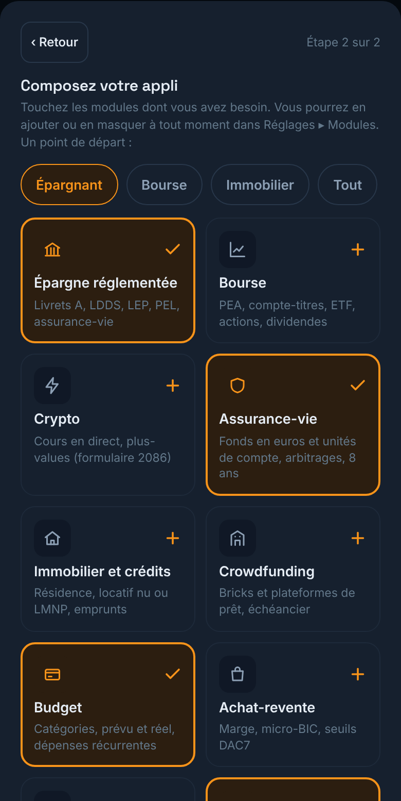
Au premier lancement, touchez « Partir de mes données ».
Épargnant, Bourse, Immobilier ou Tout.
Touchez les tuiles pour ajouter ou retirer un module.
L'appli s'ouvre avec vos seuls onglets.
En préparation : PER, SCPI, or, comptes à l'étranger, autres actifs.
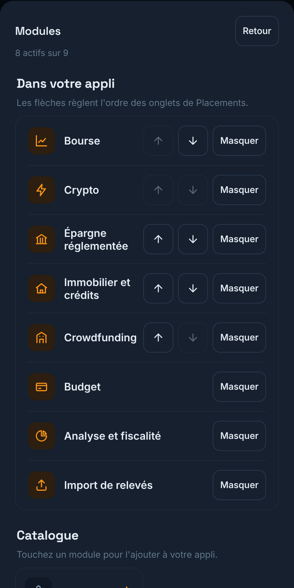
Ouvrez Réglages › Modules.
Crowdfunding et Épargne : masquer l'Épargne masque aussi le Crowdfunding, dont le portefeuille est un compte d'épargne.
Bourse et Crypto partagent un onglet, « Crypto » si vous ne gardez que la Crypto.
Un module masqué garde toutes ses données.
Sa valeur reste dans votre patrimoine, ligne « Modules masqués ».
Le récap fiscal compte toujours tout.
Deux minutes pour des chiffres justes : votre point de départ et votre situation fiscale.
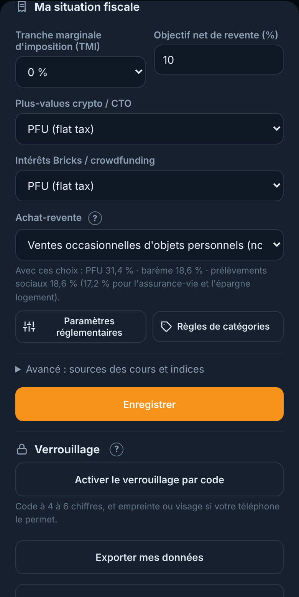
Avec Partir de mes données, l'appli démarre avec un simple compte courant ; les exemples sont effacés.
Ouvrez Réglages › Ma situation fiscale pour des revenus nets d'impôt fiables :
Taux des livrets, plafonds et prélèvements sont fournis avec leur date. À consulter dans Réglages › Paramètres réglementaires.
Vos livrets, PEL, assurance-vie et liquidités, avec les intérêts de l'année.
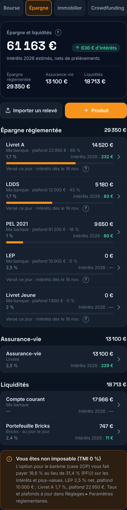
Placements › Épargne › + Produit : type, établissement, date.
Laissez cochée « Argent déjà détenu » : ni épargne nouvelle, ni gain.
Versements et retraits se saisissent sur la fiche du produit.
Les intérêts des livrets suivent la règle officielle.
Une alerte quand un livret approche de son plafond.
Un nouveau taux s'applique à sa date, l'ancien au passé.
Sur les livrets réglementés (Livret A, LDDS, LEP, Livret Jeune, CEL), les intérêts se calculent par périodes de quinze jours : du 1er au 15 et du 16 à la fin du mois.
Il rapporte dès la quinzaine suivante : versé le 10 mars, intérêts dès le 16.
Il cesse de rapporter dès le début de la quinzaine en cours.
Versez le 15 ou le dernier jour du mois, retirez le 1er ou le 16. Les intérêts sont versés le 31 décembre.
Livrets bancaires, assurance-vie et portefeuilles de plateforme rapportent chaque jour le taux annuel divisé par le nombre de jours de l'année.
Dans l'appli, touchez les boutons ? à côté des titres : votre saisie en cours est conservée.
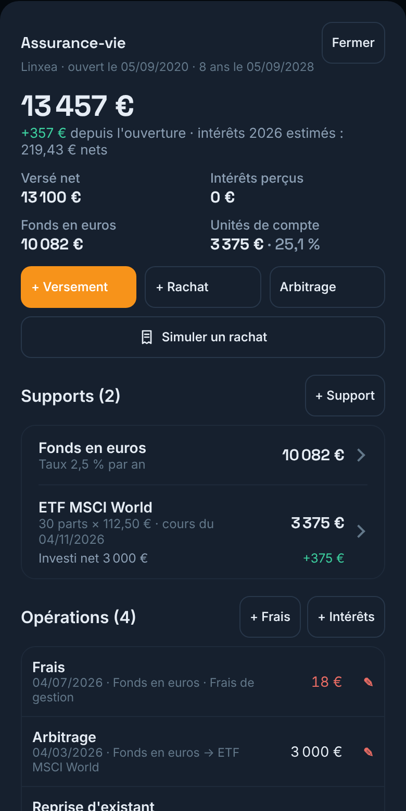
Le module Assurance-vie suit chaque contrat support par support : le fonds en euros et vos unités de compte (ETF, fonds, SCPI).
Sur la fiche de votre assurance-vie, touchez Convertir en contrat complet : le solde devient le fonds en euros, au centime près. Ou Ajouter › Contrat d'assurance-vie.
+ Support : fonds en euros avec son taux, ou unité de compte avec son symbole.
Versement, rachat, arbitrage, frais ou intérêts, depuis la fiche du contrat.
La date figure sur chaque contrat : au-delà, les rachats sont moins imposés.
Abattement annuel sur les gains rachetés, 9 200 € pour un couple, tous contrats confondus.
Les prélèvements sociaux du fonds en euros sont déjà retenus.
La part de gains : rachat × (valeur du contrat − versements) ÷ valeur. Avant 8 ans, elle relève du prélèvement forfaitaire. Après 8 ans, l'abattement de votre foyer s'applique d'abord, puis un taux réduit jusqu'à 150 000 € de versements. Choisissez votre foyer dans Réglages › Ma situation fiscale.
Sur la fiche du contrat, touchez Simuler un rachat et saisissez un montant : capital, gains, abattement, impôt, prélèvements sociaux et net perçu s'affichent, avec le montant que vous pouvez retirer cette année sans impôt. Une fois le rachat fait, saisissez la part de gains indiquée par l'assureur : le récap fiscal l'utilise.
Sans cours ni valeur relevée, l'appli retient le montant investi. Ouvrez le support et indiquez son symbole Yahoo Finance ou la valeur de votre dernier relevé.
Vos contrats restent comptés dans votre patrimoine net et votre récap fiscal, sur la ligne « Modules masqués ».
Vos titres regroupés par enveloppe, avec la variation du jour et le gain depuis l'achat.
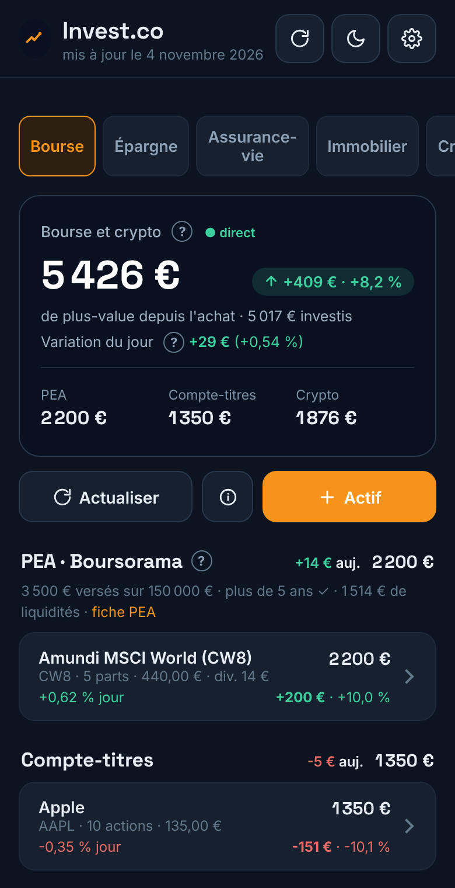
Plafond de versements du PEA, suivi automatiquement.
Avant 5 ans, un retrait clôture le PEA.
Les cours crypto se mettent à jour en continu.
Placements › Bourse › + Actif : nom, symbole et enveloppe. Un ETF parisien se saisit avec son code Euronext, par exemple CW8.
Touchez une ligne pour le prix de revient, les seuils de revente et les opérations. Actions et ETF s'actualisent avec Actualiser.
Renseignez l'ouverture et vos versements : plafond restant, liquidités et ancienneté s'affichent seuls.
Ajouter › Opération › Dividende, montant net reçu. Le total apparaît dans votre récap fiscal.
Seulement des cryptos ? Masquez la Bourse dans Réglages › Modules : l'onglet devient « Crypto ».
Plutôt que de tout saisir, importez le relevé de votre banque : le format est reconnu tout seul.
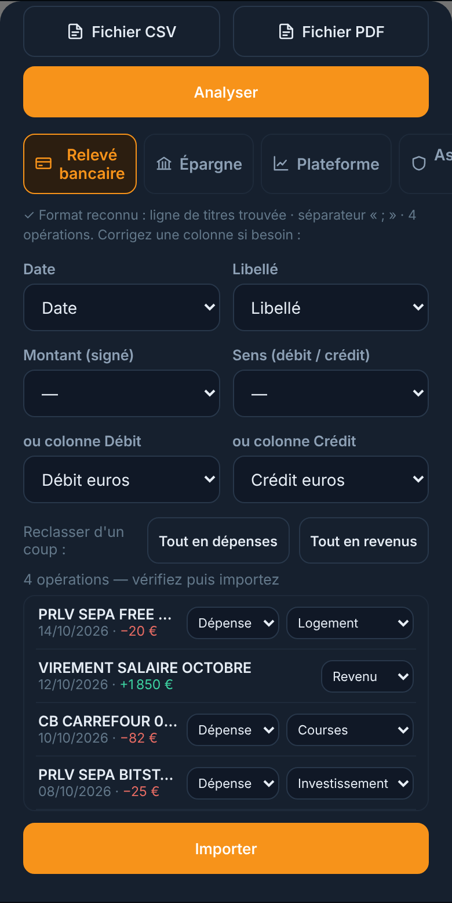
Depuis votre banque, exportez vos opérations en CSV.
Ajouter › Importer un relevé › Fichier CSV.
Chaque ligne reçoit un type et une catégorie, modifiables.
Touchez Importer.
Les relevés qui se chevauchent sont dédoublonnés.
Les virements vers vos plateformes vont en « Investissement ».
Débit / crédit, montant signé, dates françaises ou anglaises.
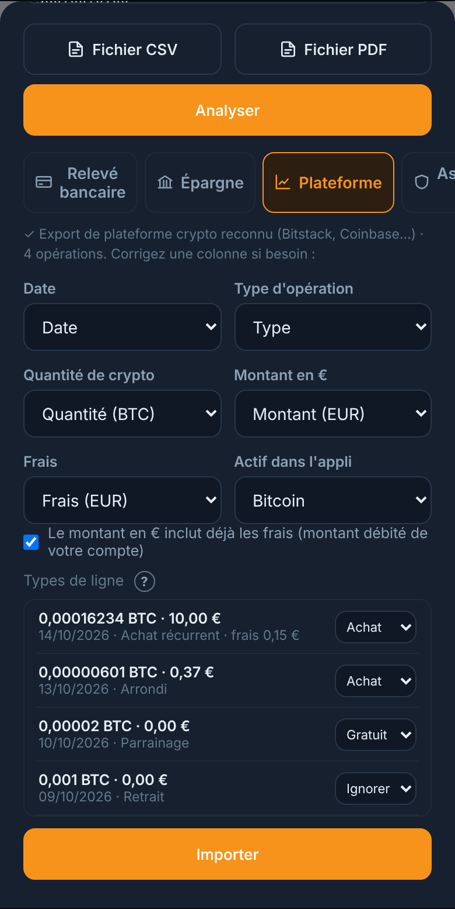
Exemple avec Bitstack :
Compte › Documents › Déclaration fiscale : le fichier arrive par e-mail.
L'onglet Plateforme s'ouvre tout seul.
L'actif est créé s'il n'existe pas encore.
Le montant est compté frais inclus. Décochez l'option si votre plateforme les facture en plus.
Onglet Épargne de l'import, puis le compte concerné : versements, retraits, intérêts et virements sont rattachés sans double comptage, et le solde est comparé à celui du relevé.
Où part votre argent chaque mois, ce qui revient, et l'écart avec ce que vous aviez prévu.
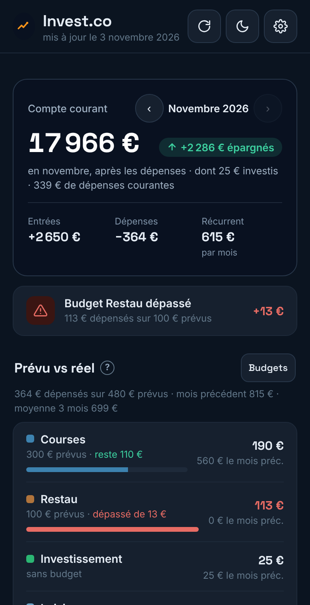
Touchez Budgets et donnez un montant à chaque catégorie. Un budget dépassé s'affiche en rouge en haut de l'écran.
Une barre par catégorie, avec le reste ou le dépassement.
Loyer, abonnements : enregistrés à chaque échéance.
Les libellés sont classés seuls ; vos règles passent en priorité.
Ajoutez-les avec + Récurrente. L'appli repère aussi celles qui reviennent chaque mois et vous propose de les ajouter.
Réglages › Règles de catégories : par exemple « boulangerie » vers Courses.
Le solde du mois isole la part investie (« dont X € investis ») de vos dépenses courantes.
Vos biens, leurs loyers et leurs crédits, puis vos projets de financement participatif.
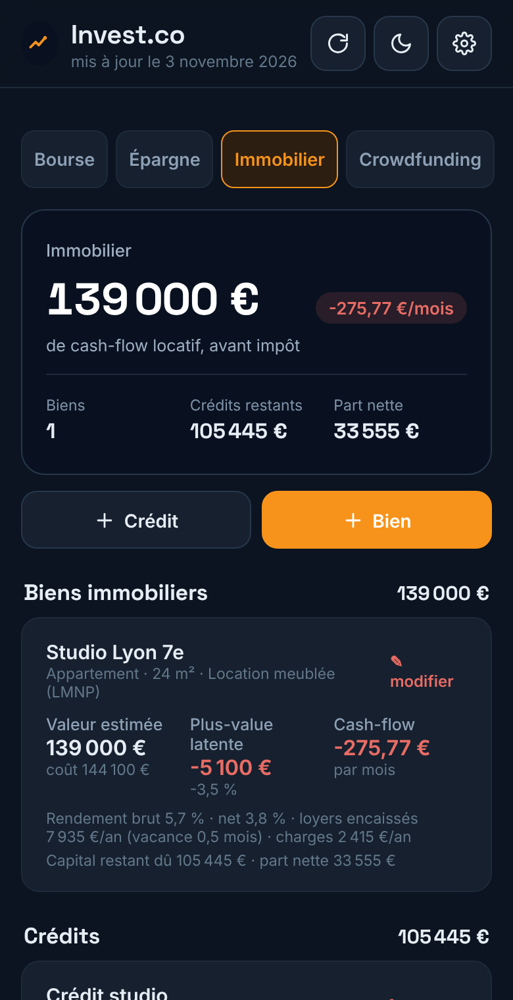
Placements › Immobilier › + Bien, puis le régime : résidence principale, location nue ou LMNP.
Loyers encaissés moins toutes les charges, sur le coût de revient.
Le même, mensualité du crédit déduite.
Valeur estimée moins le coût de revient.
Prix d'achat, frais de notaire et travaux, saisis séparément : leur somme forme le coût de revient.
Loyer hors charges, vacance en mois par an, gestion, taxe foncière, assurance PNO, entretien, copropriété.
Rendement et cash-flow sont calculés avant impôt sur les revenus fonciers ou BIC.
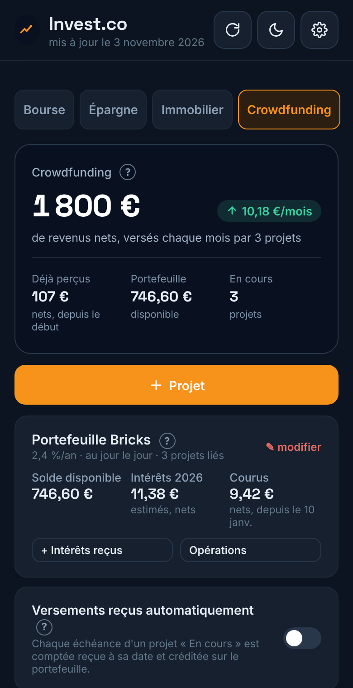
+ Crédit : capital, taux nominal, durée, date de déblocage et assurance, puis rattachez-le à son bien. Vous obtenez la mensualité, le tableau d'amortissement et le capital restant dû, déduit de votre patrimoine net.
Le capital restant dû doit concorder avec le tableau de votre banque.
Ajoutez une estimation datée à chaque nouvelle évaluation : les précédentes sont conservées, la plus récente compte.
Placements › Crowdfunding : capital placé, revenus mensuels nets, portefeuille de la plateforme et une fiche par projet avec sa progression.
Une pastille signale ce qui demande votre attention : versements à pointer, capital à récupérer.
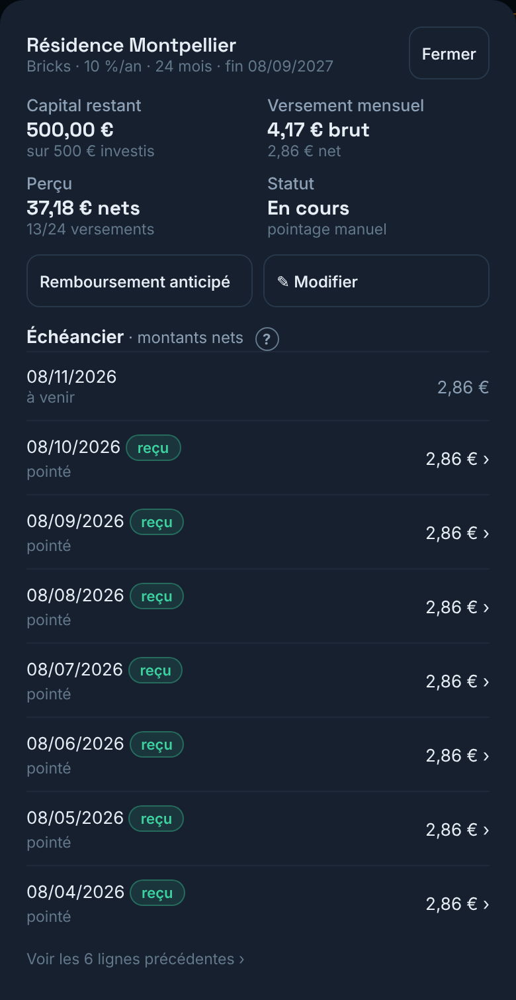
Touchez un projet : ses versements, du plus récent au plus ancien, avec le montant net de chacun.
Activez l'option : chaque échéance d'un projet « En cours » est comptée reçue à sa date et créditée sur le portefeuille. Un projet en retard reste à pointer ; Tout pointer règle tout en un geste.
Touchez la ligne du mois pour saisir le montant reçu, ou « pas encore reçu ». Seul ce mois change.
Le capital remboursé revient au portefeuille ; les intérêts sont recalculés.
Le projet passe en « Remboursé » ; les échéances suivantes disparaissent.
L'argent non investi y reste, rémunéré au jour le jour. Les projets y sont payés, les versements y reviennent.
Votre patrimoine net, sa variation du jour et depuis le 1er janvier, en un coup d'œil.
Livrets et comptes, exprimés en mois de dépenses.
Intérêts, crowdfunding et dividendes, par mois.
Ce mois-ci, face à votre moyenne.
Vos actifs par classe, avec une barre de couleur ; touchez une ligne pour l'ouvrir. À surveiller garde les trois alertes utiles, puis vos objectifs.
Gains de l'année, évolution, répartition brute ou nette de crédits, performance, cash-flow et récap fiscal. L'Achat-revente suit le même modèle.
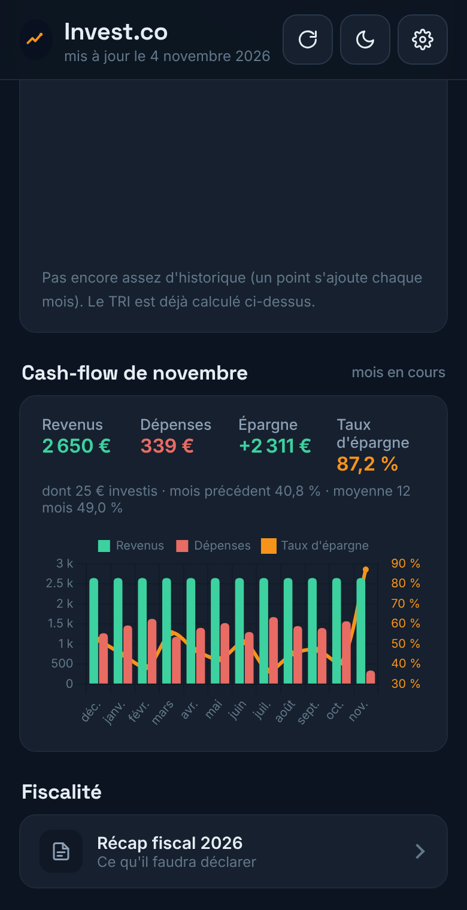
Calculées sur tout le portefeuille (formulaire 2086). Si vos ventes de l'année ne dépassent pas 305 €, rien n'est imposable.
Revenus, dépenses courantes et montant épargné, mois par mois sur un an.
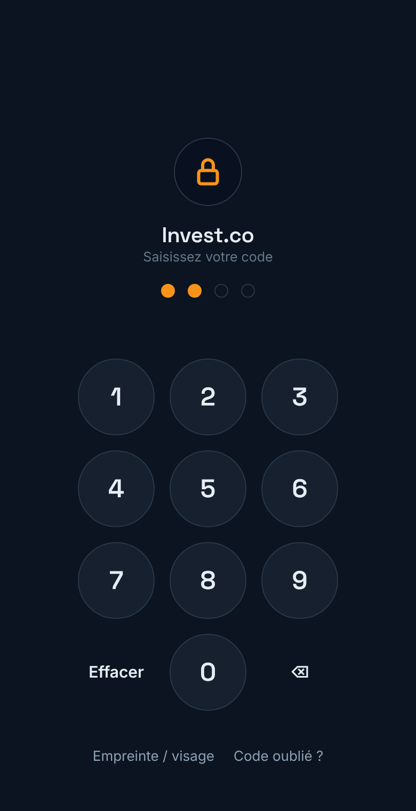
Réglages › Verrouillage › Activer le verrouillage par code.
De 4 à 6 chiffres, à confirmer.
Si votre appareil le permet.
Le code est demandé à l'ouverture, puis plus jusqu'à la fermeture de l'appli. Après cinq erreurs, la saisie est bloquée 30 secondes.
Réglages › Exporter mes données : un fichier à garder.
Synchronisation dans un dossier privé de votre Drive.
Une copie avant chaque mise à jour, restaurable.
Exportez sur l'ancien, importez sur le nouveau, ou activez Google Drive sur les deux.
Le verrouillage protège l'écran, il ne chiffre pas les données : protégez aussi votre téléphone par un code.
Uniquement sur votre appareil. Si vous activez la synchronisation, une copie va dans un dossier privé de votre Google Drive.
Seulement les symboles de vos actifs (« CW8 », « BTC/EUR ») envoyés aux services de cours. Aucun montant, aucune donnée personnelle.
Oui pour les cryptos, tant que l'appli est ouverte. Actions et ETF : environ 15 minutes de différé.
Touchez « Code oublié ? ». La seule issue est d'effacer les données de l'appli, puis de les restaurer depuis un export ou Google Drive.
Oui. Chacun a ses données ; utilisez l'export ou Google Drive pour les retrouver partout.
Non. Il ferme la fenêtre ouverte, sinon revient à l'Accueil. Pour quitter, passez par l'écran des applis récentes.
Vérifiez qu'il s'agit d'un CSV, puis corrigez les colonnes dans l'écran d'import. Pour un PDF, contrôlez le sens de chaque montant.
Même appareil et même navigateur = mêmes données. Chacun doit avoir son appareil ou son profil de navigateur.
Réglages › Réinitialiser, puis une base vide. Exportez d'abord une sauvegarde si besoin.
Vos données se récupèrent depuis une sauvegarde exportée ou Google Drive. Sauvegardez régulièrement.
Invest.co organise vos finances personnelles. Ce n'est ni un conseil en investissement, ni un conseil fiscal, juridique ou patrimonial, et aucun produit n'est recommandé. Les performances passées ne préjugent pas des performances futures ; tout investissement comporte un risque de perte en capital.
Montants nets d'impôt et récap fiscal sont estimés d'après les règles en vigueur et vos réglages. Ils ne remplacent pas votre déclaration : vérifiez sur impots.gouv.fr et consultez un professionnel en cas de doute.
Les calculs reposent sur ce que vous saisissez ou importez. Les cours viennent de sources tierces, sans garantie. Taux et plafonds sont mis à jour avec l'appli et consultables dans les Réglages.
Vos données restent sur votre appareil et ne sont pas collectées. Protégez l'accès à votre téléphone et gardez vos exports en lieu sûr : ils contiennent toutes vos informations en clair.
Bitstack, Google Drive, Chrome, Safari et les autres noms cités sont des marques de leurs propriétaires. Leur mention est informative et n'implique aucun partenariat.
Guide utilisateur Invest.co, édition {{EDITION}}, version {{VERSION}} de l'appli. Les écrans présentés utilisent des données fictives.